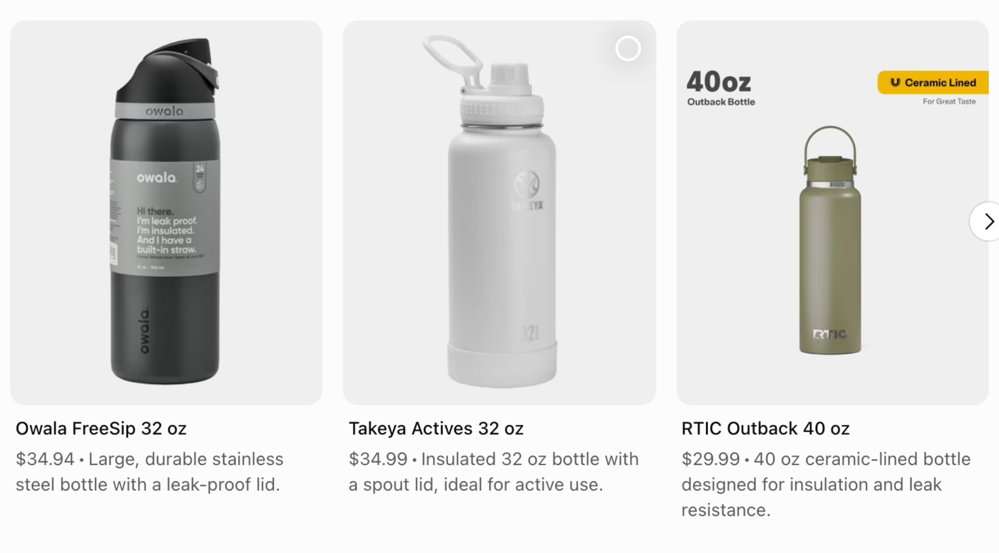
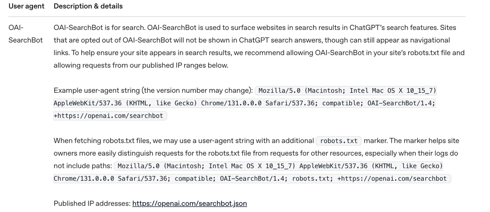
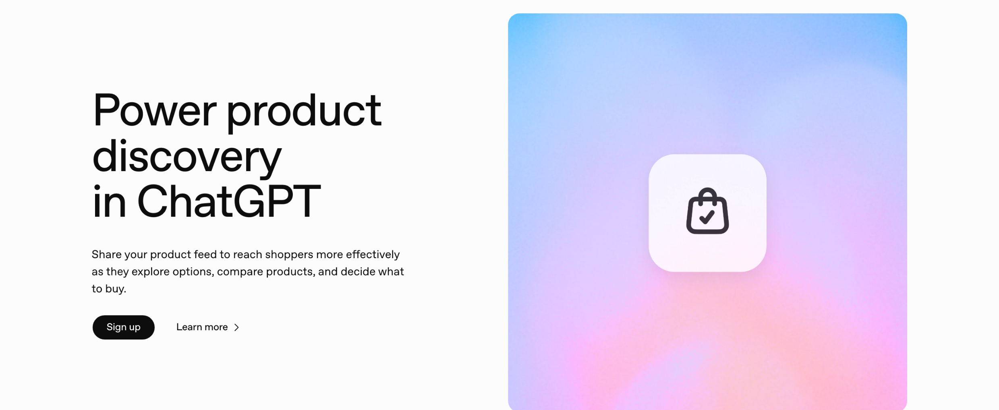

The checklist, free and ungated
Six steps that trace back to a document OpenAI or Shopify published, and eight that trace back to nothing. Every claim below carries its quote and its link, so you can check the whole page yourself in about ten minutes.
RISE DTC / ChatGPT visibility
Why this matters now
A study published on 14 July 2026 watched 56 people compare products inside ChatGPT across 221 codable shopping tasks. 92.8% of those tasks ended with no meaningful click out to the open web. Whatever ChatGPT put on the screen was the entire set of options those shoppers considered.
The same study matched what people chose against how often ChatGPT cited each brand, and found the two move together at 0.57. That is a correlation on a screened sample of 56 people. It does not prove that a citation causes a sale, and the authors flag the sample size themselves. Read it as directional.
The direction is still worth acting on. Your buyer is running the comparison inside a chat window, and your store either shows up in it or does not. So the job changes shape. ChatGPT has to be able to read your product page at all, and your data has to survive the comparison against every other seller carrying the same thing.
Everything below traces back to something OpenAI or Shopify published. Where a step came from a blog post instead of a document, it is in the skip list with the reason.
"92.8% of all tasks ended with no meaningful click to the open web, and 3.2% verified a claim on an outside site."
Profound with Kevin Indig and Eric Van Buskirk of Clickstream Solutions · 56 participants, 221 codable tasks, published 14 July 2026 · tryprofound.com Published result
"251% increase in orders YoY"
Published result
"251% increase in orders YoY"
What you are aiming at
Two different units share that screen. OpenAI's help article on shopping results says the product results are selected independently by ChatGPT and are not ads. ChatGPT does carry advertising, and OpenAI documents it in a separate help article, in a separate slot.
Everything in this checklist is about the organic unit. That is the one your product data and your product pages can move.
"Product results are selected independently by ChatGPT and are not ads, nor influenced by any OpenAI partnerships."
OpenAI Help Center, Shopping with ChatGPT search · article updated July 2026 · help.openai.com
Step 01 · The crawler
ChatGPT search runs its own crawler, OAI-SearchBot. OpenAI's crawler documentation is blunt about what happens to a site that opts out of it, and the quote is below.
Open yourstore.com/robots.txt in a browser right now and search the page for OAI-SearchBot. No rule at all means allowed, which is where most Shopify stores sit. The ones that get burned are the stores where an SEO app or a hand-edited robots.txt.liquid added a block nobody remembers writing.
GPTBot is a different bot with a different job, model training, and OpenAI states that each setting is independent of the others. You can allow the search crawler and still disallow the training crawler. The same doc notes it can take around 24 hours from a robots.txt change for OpenAI's systems to adjust, so check it, fix it, and look again tomorrow.
"Sites that are opted out of OAI-SearchBot will not be shown in ChatGPT search answers, though can still appear as navigational links."
OpenAI, Overview of OpenAI Crawlers · fetched 30 July 2026 · developers.openai.com/api/docs/bots
This opens your live robots.txt in a new tab. Search that page for OAI-SearchBot. Nothing at all is the answer you want, because no rule means allowed.
If you find a line blocking it, the first block is the one that matters. The second is optional and only shown because it is the combination most brands want: search allowed in, model training kept out. OpenAI states the two settings are independent, so allowing one does not commit you to the other.
User-agent: OAI-SearchBot Allow: / User-agent: GPTBot Disallow: /
Step 02 · The setting
OpenAI says that for merchants on Shopify, product data is already integrated into ChatGPT through Shopify Catalog, and that no additional work is required from individual merchants. Read the eligibility inside that sentence. Shopify Catalog is described by Shopify as a catalog of eligible products sold by merchants on Shopify, so a lot of stores are already in and some are not.
Shopify's own help doc says agentic storefronts are active by default for eligible stores, that your products reach AI channels through Shopify Catalog, and that you manage which AI channels you sell on under Sales channels then Agentic in your admin. Shopify describes ChatGPT there as a discovery-focused referrer, where the customer finds you in the chat and checks out on your own store.
So this is a five minute job in your admin. Open the settings, read what is switched on, and write down what you find. Settings get switched by people who never read the doc.
"Agentic storefronts is active by default for eligible stores. Your products are made available to AI channels through Shopify Catalog... You can manage which AI channels you want to sell your products on in Sales channels>Agentic in your Shopify admin."
Shopify Help Center, Shopify agentic storefronts · fetched 30 July 2026 · the same page describes ChatGPT as "a discovery-focused referrer platform for customers to find your products" · help.shopify.com"For merchants on Shopify, product data is already integrated into ChatGPT through Shopify Catalog, helping products appear more accurately and completely in relevant user conversations. No additional work is required from individual merchants."
OpenAI, Powering product discovery in ChatGPT · 24 March 2026 · openai.comStep 03 · The data
OpenAI publishes the list of what ChatGPT weighs when it decides which products to surface. Structured metadata is the first item on it, with price and product description named as the examples. The list also carries the model's own responses and OpenAI's safety standards and product policies, so metadata is one input among several.
On a Tuesday morning that means three things. Exact product titles. Live prices. True stock counts. A variant that is sold out in your store and in stock in somebody else's feed produces a bad answer with your brand's name on it.
OpenAI's own commerce documentation makes the same point about the feed side of it: required fields ensure correct display of price and availability. Fields go missing and the product stops displaying correctly. That is the whole mechanism.
"Structured metadata from first-party and third-party providers (e.g., price, product description) and other third-party content."
OpenAI Help Center, Shopping with ChatGPT search · first of the three inputs listed under "When determining which products to surface, ChatGPT considers" · help.openai.comStep 04 · The crawl
Profound sampled 201,137 ChatGPT shopping prompt runs containing 812,190 product cards, over one week in June 2026. 707,752 of those cards, 87.3%, were retrieved from the web crawl. 102,523 of them, 12.7%, came from direct merchant product feeds.
That is one vendor's sample of one week, so treat the exact split as directional rather than a constant. The direction is hard to argue with, and OpenAI's own description of shopping research says the same thing in different words: results are organic and based on publicly available retail sites, read off product pages directly, with low-quality and spammy sites avoided.
Which makes your product page the artifact that matters. Specs, sizing, materials, care, dimensions, and a straight answer to the question your buyer actually types. The page is what gets read.
"707,752 (87.3%) product cards are retrieved from web crawl. 102,523 (12.7%) are retrieved from direct merchant product feeds."
Profound, Breaking down how ChatGPT Shopping works behind the user experience · 201,137 prompt runs sampled 18 to 25 June 2026, published 23 July 2026 · tryprofound.com"Results are organic and based on publicly available retail sites" ... "reading product pages directly, citing sources, and avoiding low-quality or spammy sites."
OpenAI, Introducing shopping research · openai.comStep 05 · The ranking
Tap a product in ChatGPT and it can show a list of merchants offering that item. OpenAI's current help article names the factors it ranks that list on, and the fourth one is the interesting one for a DTC brand: whether the merchant is the maker or the primary seller.
If you manufacture your own line, you start that comparison ahead of every reseller carrying it. That advantage evaporates if your availability data is wrong or your price is stale, which is why step 03 sits above this one.
One housekeeping note. An older OpenAI launch post listed a fifth factor alongside these four. The current help article carries four. We print the current four and leave the fifth out.
"Merchants are ranked based on factors like availability, price, quality, and whether they are the maker or primary seller of that item."
OpenAI Help Center, Shopping with ChatGPT search · current list, read 30 July 2026 · help.openai.comStep 06 · The feed
There is a real application for sending OpenAI a structured product feed. Onboarding is currently available to approved partners, and the way in is a form at chatgpt.com/merchants. No self-serve switch, no shortcut.
The specification is public, so you can scope the work before you apply. Feeds are pushed to OpenAI over SFTP as a full catalog snapshot, with a recommended cadence of at least daily. parquet is preferred, and jsonl.gz, csv.gz and tsv.gz are also supported. Required fields cover the correct display of price and availability. OpenAI names the optional attributes that pay off too, and the quote is below.
This one is an engineering job with a real maintenance cost. Read the spec, size it honestly, then decide. Steps 01 to 05 cost you an afternoon and cover the 87.3% either way.
"Onboarding product feeds in ChatGPT is currently available to approved partners. To apply for access, fill out this form here"
OpenAI commerce documentation, Get Started · the form links to chatgpt.com/merchants · developers.openai.com"Required fields ensure correct display of price and availability, while recommended attributes ... improve ranking, relevance, and user trust."
OpenAI commerce documentation, Key Concepts · the recommended attributes named are rich media, reviews and performance signals · developers.openai.com
Run it yourself
Two minutes, no tooling, and it tells you more than any audit. Type what you sell and run these three in a logged out window. Whoever comes back is who your buyer meets before they reach a single website.
best insulated water bottles under $40
compare the best insulated water bottles on durability and price, and tell me who sells each one
I need insulated water bottles that will last. What should I buy and where from?
Use a logged out window or ChatGPT leans on your own history and flatters you. Ask from the country you actually sell into, because the catalogue it shows is keyed to where the request comes from. If your store is missing from all three, start at step 01 and work down.
Steps you can skip
Every one of these appears on a ChatGPT visibility checklist doing the rounds. We searched OpenAI's live commerce and shopping documentation for each one. Here is what turned up, and what we do instead.
Bing does not appear as a mechanism anywhere in OpenAI's commerce documentation or its shopping help articles. The documented paths are the crawl and the product feed. Register with Bing for Bing's own reasons if you like. It is not a step in these docs.
Same absence. Nothing in OpenAI's shopping or commerce documentation names a search console of any kind as a route into ChatGPT's product results. Keep Search Console for Google, where it earns its keep.
schema.org is not named in OpenAI's commerce or shopping docs, and the mechanism those docs describe is the product feed. That is a statement about what those documents say. With 87.3% of product cards read off the web crawl, what sits on your product page carries real weight.
No form of that description exists anywhere in OpenAI's documentation. The real route is the gated merchant application at chatgpt.com/merchants, covered in step 06.
OpenAI introduced workspace agents in April 2026 and described them as an evolution of GPTs, aimed at organization accounts. Nothing in the merchant documentation treats the GPT Store as a route to product placement. Spend that week on your product pages.
We went looking for a primary source or a study with a published method behind this one and came up with neither. It circulates on vendor blogs. Write your product pages for the person buying and you have already done the useful version.
An OpenAI launch post from 2025 listed it among the merchant ranking factors. The current help article lists four factors and Instant Checkout is not one of them. The four that survive are in step 05.
The claim that ChatGPT ranks brands off a Wikipedia trust hierarchy traces back to a study whose provenance we could not establish. It stays off the list until somebody can show the method.
Every source on this page was read at its live URL on 30 July 2026 and is linked in full. Two of the fourteen citations are secondary, both from Profound, and both are named and dated where they appear so you can weigh them accordingly. Where we could not verify a claim, this page prints the absence instead of the claim.
Where you got to
Steps 01 and 02 take about ten minutes together and cover most of what decides whether you appear at all. This remembers where you stopped, in this browser only. Nothing is sent anywhere and nothing asks for your email.
While you are here
Availability and price sit in OpenAI's own list. Before you move a price to win a comparison inside a chat window, run the number that tells you what the move costs you. These are free, they run in your browser, and they ask for nothing.
Ready when you are
From week one we run this on live Shopify and ad data, from the product pages up through the order economics underneath them. Book a 30 minute intro call and we will walk your store together.
Direct with the team. No pitch deck.